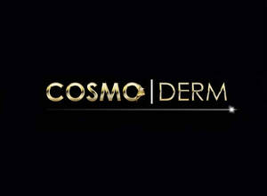

Trade Mark Journal No.2025/044 31 October 2025
UK00004278030 14 October 2025 (3,5,44)

- Class 3
- Skin hydrators being injectable dermal fillers; Cosmetic skin enhancers; Cosmetic preparations for skin firming; Skin moisturisers; Skin lotions; Skin creams; Skin make-up; Skin hydrators; Skin cleansing lotion; Skin conditioners; Skin cleansing cream; Skin creams [for cosmetic use]; Skin creams [cosmetic]; Cosmetics for the treatment of dry skin; Skin care cosmetics; Skin fresheners; Creams for firming the skin; Skin cream [for cosmetic use]; Moisturising skin lotions [cosmetic]; Moisturising skin creams [cosmetic]; Skin balms [cosmetic]; Cosmetics for use on the skin; Skin care creams [cosmetic]; Cosmetic creams for skin care; Skin recovery creams [cosmetics]; Cosmetic skin fresheners; Skin care preparations; Skin fresheners [cosmetics]; Skin softening preparations; Cosmetic preparations for skin care; Creams (Cosmetic -); Cosmetic creams; Cosmetics and cosmetic preparations; Cosmetic moisturisers; Cosmetic facial lotions; Lotions for cosmetic purposes; Facial creams [cosmetic]; Facial creams [for cosmetic use]; Cosmetic preparations; Anti-aging creams [for cosmetic use]; Facial moisturisers [cosmetic]; Anti-wrinkle creams [for cosmetic use]; Cosmetic creams for the skin; Facial cream [for cosmetic use]; Collagen for cosmetic purposes; Cleansing creams [cosmetic]; Facial toners [cosmetic]; Lip coatings [cosmetic]; Pomades for cosmetic purposes; Anti-ageing serums for cosmetic purposes; Cosmetic creams and lotions; Anti-wrinkle cream [for cosmetic use]; Adhesives for cosmetic purposes; Acne cleansers, cosmetic; Facial washes [cosmetic]; Lip stains for cosmetic purposes; Cosmetic facial packs; Skin care lotions [cosmetic]; Retinol cream for cosmetic purposes; Cosmetic preparations for eyelashes; Skin toners [cosmetic]; Gels for cosmetic purposes; Skin care (Cosmetic preparations for -); Skin conditioning creams for cosmetic purposes; Ointments for cosmetic use; Moisturising gels [cosmetic]; Softening cleanser [cosmetic]; Moisturising concentrates [cosmetic]; Cosmetics; Lip balm; Lip gloss; Lip balms; Lip glosses; Lip liner; Lip makeup; Lip tints; Lip cream; Lip liners; Lip cosmetics; Lip rouge; Lip pencils; Lip gloss palettes; Lip pomades; Lip polisher; Lip balm [non-medicated]; Lip balms [non-medicated]; Non-medicated lip balms; Lip protectors [cosmetic]; Lip conditioners; Lip stains [cosmetics]; Lip protectors (Non-medicated -); Lip coatings (Non-medicated -); Lip care preparations; Non-medicated lip care preparations; Eyebrow mascara; Lipstick; Hair balm; Cosmetic pencils for cheeks; Hair balms; Cheek rouges; Eyebrow cosmetics; Eyebrow gel; Non-medicated balm for hair; Sun protectors for lips; Shaving balm; Beard balm; Eyeliner; Facial concealer; Cosmetic preparations for the care of mouth and teeth; Shaving balms; Eyebrow styling wax; Cheek colors; Shave balm; Blemish balm creams; Face blusher; Eyebrow pencils; Skin balms (Non-medicated -); Non-medicated skin balms; Eyebrow powder; Cosmetic preparations for eye lashes; Nail cream; Lipsticks; Eye liner; Eye-shadow; Eyebrow colors; Foot balms (Non-medicated -); Cuticle cream; Eyeshadow; Skin, eye and nail care preparations; Eyelid pencils; Cosmetic eye pencils; Eyelash tint; Face cream (Non-medicated -); Eyeliner pencils; Eye concealers; Nail primer [cosmetics]; Eye makeup; Body and facial creams [cosmetics]; Facial makeup; Facial cream; Eye cream; Body and facial butters; Eye make-up; Liners [cosmetics] for the eyes; Hair care creams [for cosmetic use]; Cleansing balm; Cosmetic eye gels; Face powder [for cosmetic use]; Eyelid doubling makeup.
- Class 5
- Injectable dermal filler; Injectable dermal fillers; Medicated skin creams; Medicinal creams for skin care; Medicinal creams for the protection of the skin; Pharmaceutical skin lotions; Medicated lip balm; Medicated lip balms; Medicated lip care preparations; Creams (Medicated -) for the lips; Face cream (Medicated -); Medicated balms.
- Class 44
- Injectable filler treatments for cosmetic purposes; Cosmetic treatment; Cosmetic treatment for the body; Cosmetic treatment for the face; Cosmetic treatment services for the body, face and hair.
Harris Atcha
Inderjeet Dhami